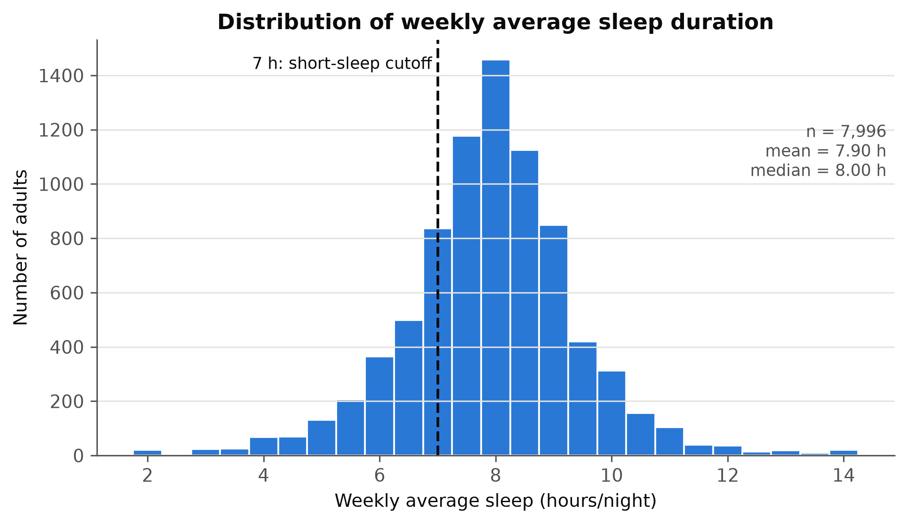
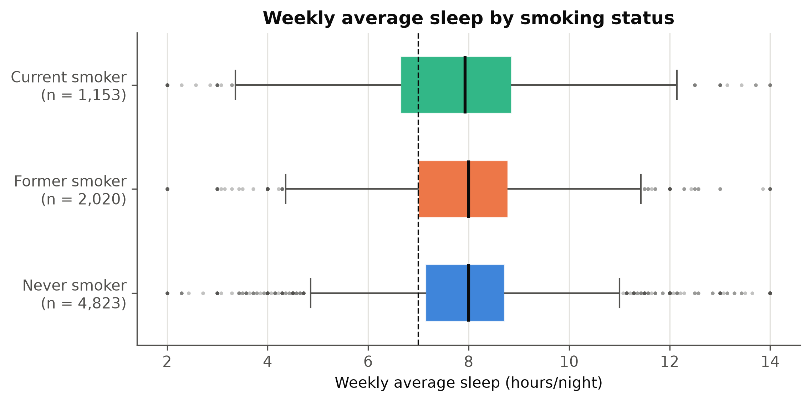
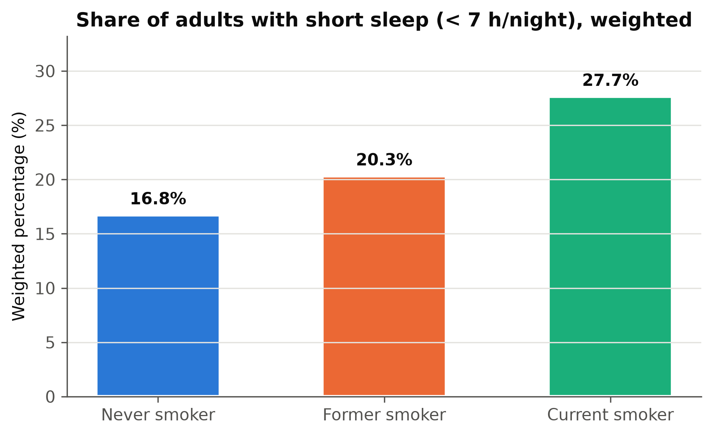
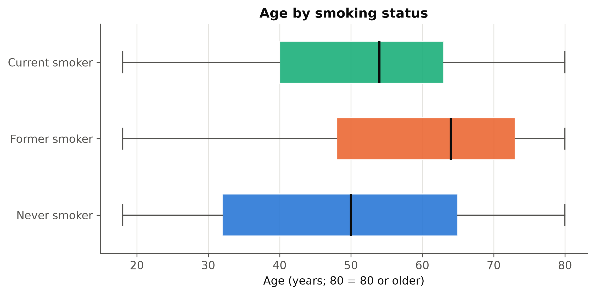
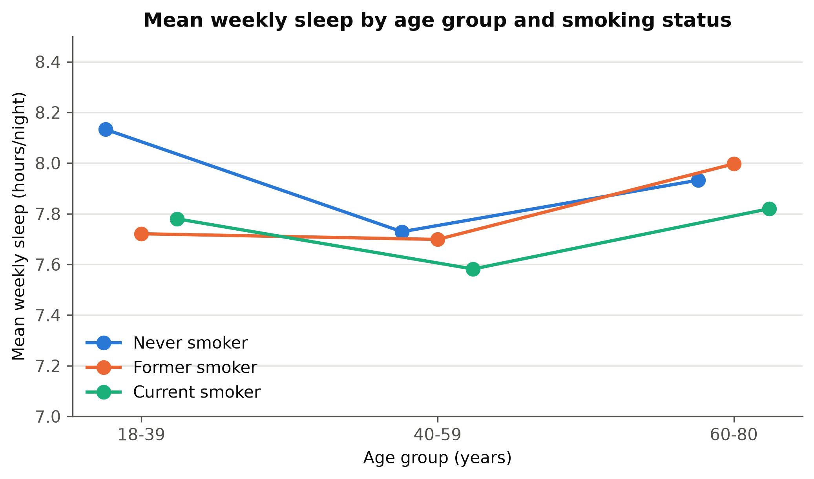
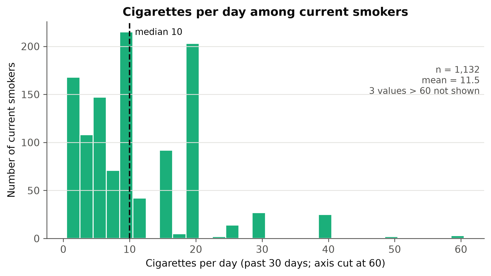

| درس | آمار و کاربردهای آن — پاییز ۱۴۰۵ |
| دانشجو | محمدیاسین زارع |
| مسیر پروژه | مسیر الف — NHANES اوت ۲۰۲۱ تا اوت ۲۰۲۳ |
| مخزن کد | github.com/RealMdyz/Statistics-Project-Fall2026 |
| برچسب تحویل | phase-1 |
این پروژه رابطهی وضعیت مصرف سیگار (هرگز، سابق، فعلی) با مدت خواب معمول را در بزرگسالان ۱۸ سال و بالاتر آمریکا، با دادههای پیمایش ملی سلامت و تغذیهی آمریکا (NHANES) در دورهی اوت ۲۰۲۱ تا اوت ۲۰۲۳، بررسی میکند. در فاز اول، سه فایل جمعیتشناختی، خواب و سیگار با شناسهی SEQN ادغام شدند و پس از اعمال سه معیار ورود، نمونهی تحلیلی ۷٬۹۹۶ بزرگسال به دست آمد. کیفیت داده بررسی و برای هر مشکل تصمیم ثبت شد.
بهطور توصیفی، میانگین هفتگی خواب سیگاریهای فعلی (۷٫۷۲ ساعت) تنها حدود ۱۴ دقیقه کمتر از افراد هرگز سیگاری (۷٫۹۵ ساعت) است، اما سهم «خواب کوتاه» (کمتر از ۷ ساعت) در سیگاریهای فعلی ۲۷٫۷٪ و در هرگز سیگاریها ۱۶٫۸٪ است (برآورد وزندار)؛ یعنی حدود ۱۱ واحد درصد تفاوت. گروههای سیگار از نظر سن و جنسیت با یکدیگر متفاوتاند؛ بنابراین این تفاوتها خام و صرفاً توصیفیاند و هیچ ادعای استنباطی یا علّی در این فاز مطرح نمیشود.
خواب کافی و مصرف دخانیات هر دو از عوامل مهم سلامت عمومیاند. نیکوتین یک مادهی محرک است و مصرف سیگار ممکن است با الگوی خواب ارتباط داشته باشد. هدف این پروژه توصیف و سپس بررسی آماری این ارتباط در یک نمونهی ملی است.
سؤال آماری اصلی: آیا مدت خواب معمول در بزرگسالان ۱۸ سال و بالاتر آمریکا میان افراد هرگز سیگاری، سیگاری سابق و سیگاری فعلی تفاوت دارد، و آیا این رابطه پس از در نظر گرفتن سن و جنسیت باقی میماند؟
نوع سؤال: مقایسهای (مقایسهی خواب در سه گروه) و ارتباطی (رابطهی شدت مصرف با خواب، با کنترل سن و جنسیت). سؤال پیشبینیمحور یا علّی نیست.
فرضیهی اولیه: سیگاریهای فعلی نسبت به افراد هرگز سیگاری، خواب معمول کوتاهتر و سهم بیشتری از خواب کوتاه گزارش میکنند و سیگاریهای سابق در میانه قرار میگیرند. فرض صفر و مقابل بهصورت رسمی در فاز سوم نوشته میشوند.
NHANES یک پیمایش ملی سلامت است که مرکز ملی آمار سلامت آمریکا (NCHS)، زیرمجموعهی مراکز کنترل و پیشگیری بیماری (CDC)، اجرا میکند. هدف آن برآورد وضعیت سلامت و تغذیهی جمعیت غیرنظامیِ ساکن در خانوارهای آمریکاست. دورهی اوت ۲۰۲۱ تا اوت ۲۰۲۳ نخستین انتشار ملی پس از توقف ناشی از همهگیری کروناست.
هر شرکتکننده سه مرحله را طی میکند: مصاحبهی خانگی (پرسشنامههای جمعیتشناختی، سلامت و سبک زندگی)، معاینه در مرکز معاینهی سیار (MEC؛ اندازهگیریهای بدنی و فشار خون) و آزمایشهای آزمایشگاهی. هر دو متغیر اصلی این پروژه، یعنی خواب و سیگار، از پرسشنامهی مصاحبهی خانگی میآیند و خوداظهاریاند.
دادهها عمومیاند و از صفحهی رسمی CDC در تاریخ ۱۲ اکتبر ۲۰۲۶ (۲۰ مهر ۱۴۰۵) با اسکریپت src/download_data.py دریافت شدند. سه فایل استفادهشده:
| فایل | بخش | تعداد ردیف | کاربرد در پروژه |
|---|---|---|---|
DEMO_L | جمعیتشناختی | 11,933 | سن، جنسیت، وزنها و متغیرهای طرح نمونهگیری |
SLQ_L | پرسشنامهی خواب (۱۶ سال+) | 8,501 | ساعت خواب روزهای کاری و تعطیل |
SMQ_L | پرسشنامهی سیگار (۱۲ سال+) | 9,015 | وضعیت مصرف و تعداد نخ در روز |
نوع مطالعه: این داده حاصل یک پیمایش مقطعی و مشاهدهای است. هیچ مداخلهای روی افراد انجام نشده و هر فرد تنها یک بار مشاهده شده است. بنابراین دادهها میتوانند ارتباط میان متغیرها را نشان دهند، اما برای اثبات رابطهی علّی یا تعیین جهت رابطه کافی نیستند.
NHANES نمونهی تصادفی ساده نیست. نمونه با یک طرح چندمرحلهای، لایهبندیشده و خوشهای انتخاب میشود: ابتدا واحدهای نمونهگیری اولیه (معمولاً شهرستانها؛ ۳۰ واحد در این دوره) و سپس بهترتیب محلهها، خانوارها و افراد. در مرحلهی آخر، همهی افراد زیر ۲۰ سال و بالای ۶۰ سالِ خانوار انتخاب میشوند، اما از بزرگسالان ۲۰ تا ۵۹ سال فقط یک یا دو نفر. در این دوره، نمونهگیری مازاد بر اساس نژاد و درآمد نیز حذف شده است.
پیامد: احتمال انتخاب شدن برای همه یکسان نیست؛ مثلاً سالمندان بیش از سهم واقعیشان در نمونه حضور دارند (۴۲٫۸٪ نمونهی تحلیلی ما ۶۰ سال و بالاترند، در حالی که برآورد وزندار این سهم ۳۰٪ است).
هر شرکتکننده یک وزن نمونهگیری دارد که نشان میدهد نمایندهی چند نفر از جمعیت آمریکاست. وزن، احتمال انتخاب نابرابر را جبران میکند و اثر عدم پاسخ را تا حدی تعدیل میکند. مجموع وزنهای مصاحبهی همهی ۱۱٬۹۳۳ شرکتکننده حدود ۳۲۷ میلیون است که تقریباً برابر جمعیت هدف آمریکاست. وزنها از حدود ۴٬۶۰۰ تا ۱۷۱٬۰۰۰ متغیرند.
انتخاب وزن: طبق راهنمای NHANES، باید وزن «کوچکترین زیرجمعیتی» را به کار برد که همهی متغیرهای تحلیل را دارد. چون هر دو متغیر اصلی از مصاحبهی خانگیاند و از معاینه یا آزمایش استفاده نمیکنیم، وزن مصاحبه (WTINT2YR) انتخاب شد. برآورد میانگین یا نسبت وزندار بهصورت Σ(wᵢ·xᵢ) / Σwᵢ محاسبه میشود.
لایه و خوشه: متغیرهای SDMVSTRA (لایهی ساختگی) و SDMVPSU (خوشهی ساختگی) ساختار طرح را نشان میدهند. افراد یک خوشه به هم شبیهترند، پس نادیده گرفتن طرح، خطای استاندارد را کمتر از واقع نشان میدهد. این متغیرها در فاز اول (توصیفی) لازم نیستند و در فاز سوم برای فاصلهی اطمینان به کار میروند.
واحد مشاهده: هر ردیف یک شرکتکننده است. در هر سه فایل، تعداد ردیفها با تعداد شناسههای یکتای SEQN برابر است؛ یعنی هیچ فردی بیش از یک ردیف ندارد و ساختار تکرارشونده یا سلسلهمراتبی وجود ندارد.
| متغیر | نام در NHANES | نوع | نقش |
|---|---|---|---|
| ساعت خواب روزهای کاری | SLD012 | کمی پیوسته (گام ۰٫۵ ساعت) | سازندهی متغیر پاسخ |
| ساعت خواب روزهای تعطیل | SLD013 | کمی پیوسته (گام ۰٫۵ ساعت) | سازندهی متغیر پاسخ |
| میانگین هفتگی خواب | (۵×SLD012 + ۲×SLD013) ÷ ۷ | کمی پیوسته | متغیر پاسخ اصلی |
| خواب کوتاه | میانگین هفتگی کمتر از ۷ ساعت | دودویی | نسخهی دودویی پاسخ |
| مصرف دستکم ۱۰۰ نخ در عمر | SMQ020 | دودویی | سازندهی گروه سیگار |
| مصرف فعلی سیگار | SMQ040 | اسمی (هر روز / بعضی روزها / اصلاً) | سازندهی گروه سیگار |
| وضعیت سیگار | ترکیب دو متغیر بالا | اسمی سهسطحی | متغیر گروهبندی اصلی |
| تعداد نخ در روز | SMD650 | کمی گسسته | شدت مصرف (فقط سیگاریهای فعلی) |
| سن | RIDAGEYR | کمی (سقف ۸۰ سال) | متغیر تعدیل |
| جنسیت | RIAGENDR | دودویی | متغیر تعدیل |
| وزن مصاحبه | WTINT2YR | وزن نمونهگیری | تعمیم به جمعیت |
تعریف گروههای سیگار: «هرگز سیگاری» = SMQ020 برابر «خیر»؛ «سیگاری سابق» = SMQ020 برابر «بله» و SMQ040 برابر «اصلاً»؛ «سیگاری فعلی» = SMQ020 برابر «بله» و SMQ040 برابر «هر روز» یا «بعضی روزها».
دلیل میانگین هفتگی: هفته پنج روز کاری و دو روز تعطیل دارد؛ میانگین سادهی دو مقدار، وزن برابر به این دو نوع روز میداد. تفاوت خواب روز کاری و تعطیل نیز برای بسیاری از افراد صفر نیست (میانگین تفاوت حدود نیم ساعت).
دلیل آستانهی ۷ ساعت: آکادمی پزشکی خواب آمریکا و انجمن پژوهش خواب حداقل ۷ ساعت خواب را برای بزرگسالان توصیه میکنند و CDC نیز کمتر از ۷ ساعت را «خواب کوتاه» تعریف میکند. این آستانه پیش از مشاهدهی نتایج تعیین شد.
سه فایل با کلید SEQN و روش left join ادغام شدند و DEMO_L پایه قرار گرفت، چون همهی شرکتکنندگان و وزنها در آن هستند. با این روش هیچ فردی در مرحلهی ادغام بهطور ضمنی حذف نمیشود و همهی حذفها بعداً بهصورت آگاهانه و قابل ردیابی انجام میشوند. تعداد ردیفها پیش و پس از ادغام برابر بود (۱۱٬۹۳۳)، و بررسی validate="one_to_one" تأیید کرد که شناسهی تکراری وجود ندارد.
| مرحله | باقیمانده | حذفشده | دلیل حذف |
|---|---|---|---|
| همهی شرکتکنندگان NHANES ۲۰۲۱–۲۰۲۳ | 11,933 | — | — |
| ۱. سن ۱۸ سال و بالاتر | 8,153 | 3,780 | پرسشهای اصلی سیگار فقط از ۱۸ سال+ پرسیده میشوند |
| ۲. وضعیت سیگار معتبر | 8,121 | 32 | ۱۴ نفر «جواب نداد/نمیداند» و ۱۸ نفر بدون پاسخ در SMQ020 |
| ۳. هر دو مقدار خواب موجود | 7,996 | 125 | میانگین هفتگی خواب قابل محاسبه نیست |
| نمونهی تحلیلی نهایی | 7,996 | 3,937 | — |
ترتیب مراحل اهمیت دارد: ۱۴۲ بزرگسال دادهی خواب ناقص داشتند، اما ۱۷ نفر از آنها پیشتر در مرحلهی ۲ حذف شده بودند. در مجموع تنها ۱۵۷ بزرگسال (۱٫۹٪ از ۸٬۱۵۳ نفر) به دلیل دادهی ناقص کنار گذاشته شدند. این افراد بهطور میانگین کمی مسنتر (۵۶٫۶ در برابر ۵۲٫۱ سال) و با سهم مردان بیشتر (۵۴٪ در برابر ۴۵٪) بودند؛ بنابراین حذف کاملاً تصادفی نبوده، اما به دلیل تعداد کم، اثر آن بر نتایج احتمالاً ناچیز است.
کیفیت داده روی همهی ۸٬۱۵۳ بزرگسال بررسی شد. نکتهی کلیدی تفکیک «پرسیده نشده» از «واقعاً گمشده» است: مثلاً SMQ040 برای ۶۰٪ بزرگسالان خالی است، اما همهی این موارد نتیجهی پرش طبیعی پرسشنامهاند (این پرسش فقط از کسانی پرسیده میشود که به SMQ020 پاسخ «بله» دادهاند) و هیچ مورد واقعاً گمشدهای وجود ندارد. همچنین کدهای ویژه (۷، ۹، ۷۷۷، ۹۹۹) عدد ثبت شدهاند و با بررسی سادهی خانههای خالی شناسایی نمیشوند؛ این کدها جداگانه بررسی شدند.
| مورد | تعداد | تصمیم | دلیل |
|---|---|---|---|
شناسهی تکراری SEQN | 0 | — | هر فرد یک بار آمده است |
| مقادیر خارج از محدوده (سن، جنسیت، وزن، خواب) | 0 | — | همه در محدودهی مستندات |
| خواب کاری یا تعطیل گمشده | 142 | حذف | متغیر پاسخ قابل محاسبه نیست |
SMQ020 جواب نداد (۷) / نمیداند (۹) | 14 | حذف | گروه سیگار قابل تعیین نیست |
SMQ020 خالی | 18 | حذف | گروه سیگار قابل تعیین نیست |
SMQ040 خالی چون SMQ020 = خیر | 4,878 | گمشده نیست؛ «هرگز سیگاری» | پرش طبیعی پرسشنامه |
| خواب با کد ۲ (کمتر از ۳ ساعت) یا ۱۴ (۱۴ ساعت+) | 104 | نگهداری و علامتگذاری | اطلاعات معتبر از خواب بسیار کم یا زیاد؛ حذف آنها سوگیری ایجاد میکرد. تحلیل حساسیت در فاز پنجم |
SMD650 = ۷۷۷ / ۹۹۹ | 9 | تبدیل به گمشده | تعداد واقعی نخ نیست |
| سیگاری «بعضی روزها» بدون تعداد نخ | 15 | نگهداری در گروه فعلی | ۱۰ نفر در ۳۰ روز گذشته سیگار نکشیده و ۵ نفر «نمیداند» گفتهاند؛ پرسش تعداد نخ از آنها پرسیده نشده |
| اختلاف خواب کاری و تعطیل ≥ ۸ ساعت | 19 | نگهداری | از نظر منطقی ممکن (مثلاً کار شیفتی)؛ شاهدی بر خطا نیست |
| سن ۸۰ (سقف کدگذاری) | 508 | نگهداری | سن واقعی بالای ۸۰ نامعلوم؛ محدودیت ثبت شد |
اهمیت کدهای ویژه در یک مثال روشن است: میانگین خام SMD650 با احتساب کد ۹۹۹ برابر ۱۹٫۱ نخ است، اما پس از تبدیل این کدها به گمشده به ۱۱٫۶ نخ کاهش مییابد؛ یعنی تنها ۹ مقدار نادرست، میانگین را حدود ۶۵٪ بالا میبرد.
سازگاری منطقی: هیچ فرد «هرگز سیگاری» یا «سابق» تعداد نخ ثبتشده ندارد و همهی سیگاریهای روزانه تعداد نخ دارند. جدول توافقی SMQ020 و SMQ040 نشان داد که منطق پرش پرسشها در داده رعایت شده است.
| متغیر | سطح | تعداد | درصد نمونه | درصد وزندار |
|---|---|---|---|---|
| وضعیت سیگار | هرگز | 4,823 | 60.3 | 63.0 |
| سابق | 2,020 | 25.3 | 22.9 | |
| فعلی | 1,153 | 14.4 | 14.1 | |
| جنسیت | مرد | 3,572 | 44.7 | 48.3 |
| زن | 4,424 | 55.3 | 51.7 | |
| خواب کوتاه | بله (کمتر از ۷ ساعت) | 1,595 | 19.9 | 19.1 |
| خیر | 6,401 | 80.1 | 80.9 |
حدود ۱۴٪ بزرگسالان سیگاری فعلیاند و حدود یکپنجم آنها خواب کوتاه گزارش کردهاند. زنان در نمونه کمی بیش از سهم واقعیشان حضور دارند و وزندهی این را اصلاح میکند.
| متغیر | n | میانگین | انحراف معیار | میانه | Q1 | Q3 | IQR | چولگی |
|---|---|---|---|---|---|---|---|---|
| میانگین هفتگی خواب (ساعت) | 7,996 | 7.90 | 1.51 | 8.00 | 7.00 | 8.71 | 1.71 | -0.06 |
| خواب روز کاری (ساعت) | 7,996 | 7.74 | 1.62 | 8.00 | 7.00 | 8.50 | 1.50 | 0.02 |
| خواب روز تعطیل (ساعت) | 7,996 | 8.30 | 1.72 | 8.00 | 7.50 | 9.00 | 1.50 | -0.11 |
| سن (سال) | 7,996 | 52.06 | 18.56 | 55.00 | 36.00 | 68.00 | 32.00 | -0.23 |
| نخ در روز (سیگاریهای فعلی) | 1,132 | 11.51 | 9.92 | 10.00 | 5.00 | 18.50 | 13.50 | 2.53 |
انتخاب معیار مناسب:
در همهی نمودارها هر گروه سیگار رنگ ثابتی دارد (هرگز: آبی، سابق: نارنجی، فعلی: سبزآبی). نوع نمودار متناسب با نوع متغیر انتخاب شده است: هیستوگرام برای توزیع یک متغیر کمی، نمودار جعبهای برای مقایسهی متغیر کمی در چند گروه و نمودار میلهای برای نسبتها.






| شاخص | هرگز | سابق | فعلی |
|---|---|---|---|
| تعداد | 4,823 | 2,020 | 1,153 |
| میانگین خواب هفتگی (ساعت) | 7.95 | 7.88 | 7.72 |
| انحراف معیار خواب | 1.43 | 1.53 | 1.77 |
| میانهی خواب | 8.00 | 8.00 | 7.93 |
| چارک اول تا سوم خواب | 7.14 – 8.71 | 7.00 – 8.79 | 6.64 – 8.86 |
| خواب کوتاه (٪، نمونه) | 17.9 | 20.1 | 28.2 |
| خواب کوتاه (٪، وزندار) | 16.8 | 20.3 | 27.7 |
| میانگین سن (سال) | 48.9 | 59.9 | 51.5 |
| مردان (٪) | 39.6 | 51.9 | 53.2 |
جمعبندی توصیفی: میانگین خواب سیگاریهای فعلی تنها حدود ۱۴ دقیقه کمتر از هرگز سیگاریهاست، اما سهم خواب کوتاه در آنها حدود ۱۱ واحد درصد بیشتر است (۲۷٫۷٪ در برابر ۱۶٫۸٪ وزندار؛ یعنی حدود ۶۵٪ بیشتر بهصورت نسبی). انحراف معیار خواب نیز در سیگاریهای فعلی بیشتر است؛ یعنی تفاوت اصلی در پراکندگی و دنبالهی پایینی توزیع است، نه در مرکز آن. گروهها از نظر سن و جنسیت متفاوتاند و این تفاوتها خاماند؛ هیچ آزمون آماری انجام نشده و نتیجهی علّی گرفته نمیشود.
| کمیت | بدون وزن | وزندار | تفاوت |
|---|---|---|---|
| میانگین هفتگی خواب (ساعت) | 7.90 | 7.90 | 0.00 |
| میانهی هفتگی خواب (ساعت) | 8.00 | 8.00 | 0.00 |
| خواب کوتاه (٪) | 19.95 | 19.11 | -0.83 |
| سیگاری فعلی (٪) | 14.42 | 14.08 | -0.34 |
| میانگین سن (سال) | 52.06 | 47.72 | -4.33 |
| ۶۰ سال و بالاتر (٪) | 42.83 | 30.00 | -12.83 |
شناخت دادهها نشان داد که سؤال اولیه با این داده قابل پاسخ است و نیازی به تغییر آن نیست. سه دلیل: (۱) هر دو متغیر اصلی برای ۹۸٪ بزرگسالان در دسترساند؛ (۲) هر سه گروه سیگار حجم نمونهی کافی دارند (کوچکترین گروه ۱٬۱۵۳ نفر)؛ (۳) متغیرهای تعدیل (سن و جنسیت) کاملاند. بر اساس یافتههای توصیفی، سؤال با دقت بیشتری اینگونه نهایی میشود:
در بزرگسالان ۱۸ سال و بالاتر آمریکا (NHANES ۲۰۲۱–۲۰۲۳)، آیا میانگین هفتگی خواب و سهم خواب کوتاه (کمتر از ۷ ساعت) میان افراد هرگز سیگاری، سیگاری سابق و سیگاری فعلی تفاوت دارد؟ آیا این تفاوت پس از در نظر گرفتن سن و جنسیت باقی میماند؟ و آیا در میان سیگاریهای فعلی، تعداد نخ در روز با مدت خواب مرتبط است؟
افزودن «سهم خواب کوتاه» به سؤال، از این یافتهی توصیفی ناشی میشود که تفاوت گروهها بیشتر در دنبالهی پایینی توزیع است تا در میانگین. این پرسش از ابتدا در کارت پروژه بهعنوان نسخهی دودویی پاسخ تعریف شده بود.
دادههای خام در مخزن قرار ندارند. برای بازتولید همهی نتایج این گزارش:
pip install -r requirements.txtpython src/download_data.py01_load_and_merge (ادغام و جمعیت تحلیلی)، 02_data_quality (بررسی کیفیت) و 03_descriptive_stats (جدولها و نمودارها).منطق مشترک آمادهسازی داده در src/nhanes.py قرار دارد تا نمونهی تحلیلی در همهی نوتبوکها یکسان ساخته شود. جدولهای این گزارش در reports/phase1/ و نمودارها در figures/ ذخیره شدهاند.